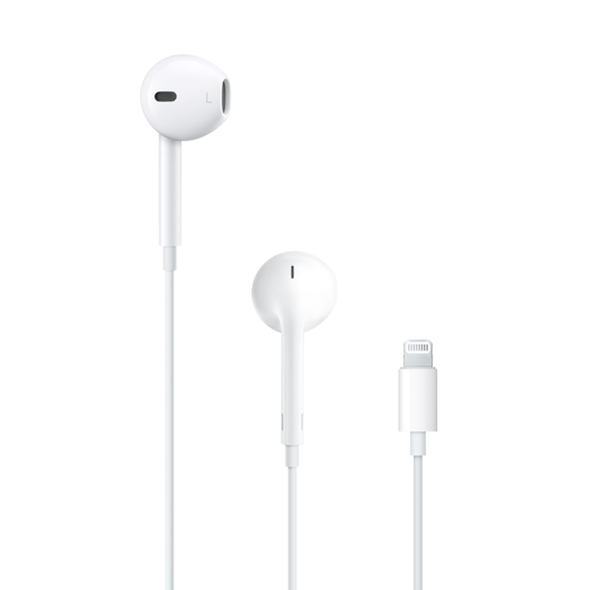

Airpods 4
Les écouteurs filaires Apple, plus précisément les EarPods avec connecteur Lightning (ou EarPods classiques avec prise jack 3,5 mm pour certains modèles plus anciens), sont des écouteurs conçus par Apple pour offrir une expérience d'écoute de haute qualité. Voici une description générale des modèles actuels et anciens :.
| CARACTERISTIQUES | IMAGE | PRIX |
|
|  | Le prix des EarPods d'Apple peut varier selon le modèle et le revendeur, mais voici une estimation générale :
|